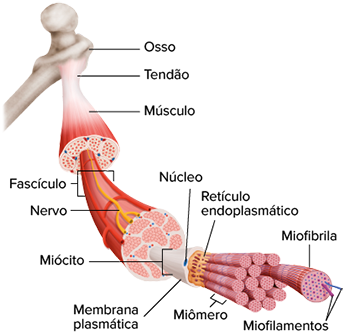

Usain Bolt, recordista mundial da prova de 100 metros rasos em 2009, na cidade de Berlim (Alemanha).
Kay Nietfeld/dpa/Alamy/Fotoarena
Em 16 de agosto de 2009, no mundial de atletismo ocorrido em Berlim (Alemanha), o jamaicano Usain Bolt venceu a final da prova de 100 metros rasos e bateu o recorde mundial, terminando a prova em apenas 9,58 segundos. Desde então, nenhum outro atleta conseguiu superar essa grandiosa marca. Sabe-se que atletas velocistas, como Usain Bolt, possuem uma grande concentração de fibras musculares claras em seus músculos, que são responsáveis pelas contrações rápidas e potentes, fundamentais para essa modalidade esportiva. Para superar esse recorde mundial, atletas velocistas de elite precisam realizar treinamento rigoroso e específico, buscando aumentar a concentração e a eficiência das fibras brancas existentes em seus músculos. Nesse caso, o estudo da estrutura e do funcionamento do tecido muscular é de extrema importância, pois fornece conhecimento necessário para que treinamentos eficientes sejam utilizados no sentido de aumentar, de forma eficiente, o rendimento dos atletas na busca de novos recordes mundiais.
- A prova de 100 metros rasos é um exemplo de atividade aeróbica ou anaeróbica?
- Quais são as fibras esqueléticas (lentas ou rápidas) mais abundantes nos músculos de um maratonista?
- Além dos músculos esqueléticos, quais tipos de músculos existem no corpo humano?
Neste capítulo será abordada a habilidade EM13CNT202.
Características e classificação do tecido muscular
Representação esquemática dos tecidos musculares existentes no corpo humano.
Os músculos do corpo humano, compostos de tecido muscular , são responsáveis por todos os movimentos realizados pelo organismo e representam cerca de 40% da massa corporal. As células do tecido muscular, denominadas miócitos ou fibras musculares, são alongadas e contráteis. A contração dessas células ocorre por meio do deslizamento dos filamentos proteicos, dispostos em seu interior, sendo a actina e a miosina as proteínas mais abundantes encontradas nesses filamentos. Nos miócitos, algumas estruturas celulares recebem nomes especiais: a membrana plasmática que envolve os miócitos é o sarcolema ; o citoplasma é o sarcoplasma ; e o retículo endoplasmático liso (não granuloso) é o retículo sarcoplasmático .
De acordo com as características morfológicas e fisiológicas apresentadas pelos miócitos, os tecidos musculares podem ser classificados em três tipos: estriado esquelético , estriado cardíaco e liso .
Representação esquemática dos componentes de um músculo estriado esquelético.
TORTORA, G. J. Corpo humano. Fundamentos de anatomia e fisiologia . 10. ed. Porto Alegre: Artmed, 2017.
Estriado esquelético
O tecido muscular estriado esquelético é o tecido muscular mais abundante, formando os músculos que estão ligados aos ossos, o que justifica o termo “esquelético” utilizado em sua nomenclatura. O músculo estriado esquelético apresenta contração rápida e voluntária .
A maioria dos músculos esqueléticos consiste em um conjunto de feixes musculares, também conhecidos como fascículos , compostos pelo conjunto de vários miócitos, alongados e dispostos paralelamente no comprimento do músculo. Os músculos também apresentam tecidos conjuntivos envoltórios, nervos e vasos sanguíneos.
Os miócitos do músculo estriado esquelético são células cilíndricas e bem alongadas, e podem chegar a 30 cm de comprimento. Essas células são plurinucleadas, ou seja, possuem muitos núcleos ovais, dispostos em sua periferia, logo abaixo do sarcolema. A presença de vários núcleos é por causa da fusão de vários mioblastos, células precursoras dos miócitos. Nesse sentido, os miócitos são exemplos de sincícios plurinucleados, e não de plasmódios .
A cor avermelhada dos músculos é decorrente da presença de mioglobina , proteína semelhante à hemoglobina, composta de um grupo heme ligado a uma única cadeia polipeptídica. Essa molécula apresenta maior afinidade ao gás oxigênio que a hemoglobina sanguínea. Dessa forma, o gás oxigênio pode difundir da corrente sanguínea para os músculos e se ligar à mioglobina. Além disso, a mioglobina armazena o gás oxigênio dentro das células musculares, disponibilizando-o durante atividades aeróbicas.
Dentro dos miócitos, os filamentos de actina e de miosina se organizam formando as miofibrilas , estruturas cilíndricas e organizadas no sentido longitudinal, apresentando um padrão de faixas transversais escuras e claras que se repetem de forma regular.
As unidades de repetição de uma miofibrila são denominadas sarcômeros ou miômeros (do grego mio e meros , que significam, respectivamente, “músculo” e “parte”), as unidades básicas de contração muscular. Os miômeros são delimitados pelas linhas Z (do alemão zwischen , que significa “meio”), onde ficam ancorados os filamentos de actina. As linhas Z ficam no meio das faixas transversais claras, também conhecidas como bandas claras ou bandas I (inicial de isotrópicas), formadas pela proteína actina. As faixas transversais escuras, também conhecidas como bandas escuras ou bandas A (inicial de anisotrópicas), correspondem aos locais em que os filamentos delgados de actina se sobrepõem aos filamentos espessos de miosina. No centro da banda A, existe a zona H (do alemão heller , que significa “claro”), onde há apenas os filamentos espessos de miosina.
Os filamentos delgados de actina são ancorados pela linha Z e se projetam no interior do miômero, enquanto os filamentos espessos de miosina são ancorados pela linha M. Em uma fibra muscular em repouso, ocorre sobreposição parcial dos filamentos de actina e miosina. Nas extremidades do miômero relaxado, por exemplo, existe apenas actina, enquanto na zona H existe apenas miosina. Essa sobreposição parcial dos filamentos de actina e miosina permite o encurtamento do miômero durante a contração das células musculares.
Representação esquemática e fotomicrografia do músculo estriado esquelético.
TORTORA, G. J. Corpo humano. Fundamentos de anatomia e fisiologia . 10. ed. Porto Alegre: Artmed, 2017.
Jose Calvo/Science Photo Library/Science Photo Library/Fotoarena
Representação esquemática de um miócito. Destaque para as miofibrilas, estruturas componentes de um miômero.
TORTORA, G. J. Corpo humano. Fundamentos de anatomia e fisiologia . 10. ed. Porto Alegre: Artmed, 2017.
Estriado cardíaco
O tecido muscular estriado cardíaco , também conhecido como miocárdio, é encontrado apenas no coração e sua função é impulsionar e manter o fluxo sanguíneo. O músculo cardíaco possui contração rápida e involuntária , ou seja, o coração se contrai independentemente de nossa vontade.
Os miócitos do miocárdio – ou cardiomiócitos – são células cilíndricas , ramificadas, com 1 ou 2 núcleos localizados no centro das células. Essas células são semelhantes aos miócitos do músculo esquelético, pois também apresentam estrias transversais , determinadas pelo arranjo dos miofilamentos de actina e de miosina. Nessas células, entretanto, as moléculas de actina e miosina não formam miofibrilas idênticas ao músculo esquelético.
Quase metade do volume dos miócitos cardíacos é ocupada por mitocôndrias, o que indica uma grande demanda de oxigênio para a produção de ATP. A mioglobina é abundante no citoplasma, fornecendo o gás oxigênio utilizado pelo metabolismo celular aeróbico.

Representação esquemática e fotomicrografia do músculo estriado cardíaco.
TORTORA, G. J. Corpo humano. Fundamentos de anatomia e fisiologia . 10. ed. Porto Alegre: Artmed, 2017.
Microscape/Science Photo Library/Fotoarena
As membranas plasmáticas dos cardiomiócitos estão intimamente unidas a partir de regiões especializadas denominadas discos intercalares . Nessas regiões,as membranas são ricas em junções do tipo Gap , que possibilitam a passagem de nutrientes, íons e impulsos elétricos entre as células. Dessa forma, o potencial de ação gerado por células especializadas do coração é rapidamente difundido para as demais células cardíacas, ocasionando a contração rítmica do órgão. Além disso, nos discos intercalares são encontrados desmossomos , estruturas da membrana plasmática que aumentam a adesão entre as células e impedem a separação celular durante os batimentos cardíacos.
Representação esquemática da transmissão dos impulsos elétricos nas células musculares cardíacas, detalhe do disco intercalar.
JUNQUEIRA, L. C.; CARNEIRO, J. Histologia básica . 11. ed. Rio de Janeiro: Guanabara Koogan, 2008.
Tecido muscular liso
O tecido muscular liso , conhecido como tecido muscular não estriado ou visceral, está localizado na parede de órgãos cavitários, por exemplo, sistema digestório, útero, bexiga urinária, brônquios e bronquíolos, ductos glandulares, glândulas mamárias, parede dos vasos sanguíneos, pupila e folículos pilosos. Entre as funções desse tecido estão a eliminação de urina pela bexiga urinária; a contração do útero no momento do parto; a regulação do fluxo de ar que chega aos pulmões; a secreção de diversas glândulas corporais; a manutenção do fluxo sanguíneo; a intensidade de luz que chega à retina, e o deslocamento do bolo alimentar no sistema digestório.
Os miócitos do músculo liso são células fusiformes , ou seja, alongadas e com extremidades afiladas, e apresentam 1 núcleo (mononucleadas) posicionado centralmente. Diferentemente das demais células musculares, as células fusiformes não possuem o sistema de túbulos T ou retículo endoplasmático desenvolvido.
O tecido muscular liso não apresenta estrias transversais , pois os filamentos de actina e de miosina não estão organizados de forma regular ao longo das células. Além disso, nos miócitos do músculo liso a miosina não está associada aos filamentos de actina, como nos outros tecidos musculares.
O músculo liso apresenta contração involuntária, sendo controlada pelo sistema nervoso autônomo, além disso, apresenta também contração lenta, quando comparada com a da musculatura estriada. No entanto, as fibras lisas podem se manter contraídas por um tempo maior.
Representação esquemática dos componentes da musculatura lisa do corpo humano.
TORTORA, G. J. Corpo humano. Fundamentos de anatomia e fisiologia . 10. ed. Porto Alegre: Artmed, 2017.
Representação esquemática de um neurônio motor. Destaque para os miócitos e as placas motoras, vistas em microscopia óptica.
JACOPIN/BSIP/Alamy/Fotoarena; Dr. Fred Hossler, Visuals Unlimited/Science Photo Library/Fotoarena
Contração muscular
A contração das fibras musculares esqueléticas depende de estímulos enviados pelas terminações dos neurônios motores. Nas proximidades da célula muscular, o axônio do neurônio motor não apresenta bainha de mielina e forma uma região conhecida como placa motora ou junção neuromuscular. Entre a membrana plasmática do neurônio motor e a membrana plasmática da célula muscular existem fendas sinápticas , espaços onde ocorre a liberação do neurotransmissor acetilcolina.
Nos músculos dos vertebrados, cada fibra muscular é controlada por apenas um neurônio motor. Porém, um único neurônio motor pode controlar até mesmo centenas de fibras musculares. O conjunto formado pelo neurônio motor e todas as fibras musculares que são controladas por ele é denominado unidade motora .
Quando um impulso nervoso se propaga até as terminações axônicas da placa motora, as vesículas sinápticas se unem com a membrana plasmática do neurônio, culminando na liberação de acetilcolina por exocitose na fenda sináptica. Esse neurotransmissor se difunde pela fenda e se liga aos receptores (canais iônicos) da membrana plasmática da fibra muscular. Como consequência, há a abertura de canais de sódio e a despolarização dos miócitos. Assim como nos neurônios, a membrana plasmática da célula muscular dispara um potencial de ação que percorre todos os pontos da fibra muscular.
A membrana plasmática das fibras musculares forma um sistema contínuo com o retículo endoplasmático dos miócitos. O potencial de ação da membrana plasmática é transmitido para o interior das células musculares por meio de um sistema de túbulos transversais, também conhecidos como túbulos T, que são dobramentos da membrana plasmática.
Dos túbulos T, o potencial de ação se propaga até o retículo endoplasmático, ou sarcoplasmático, possibilitando a liberação dos íons cálcio (Ca 2+ ) no citosol dos miócitos. A interação dos íons de cálcio (Ca2+) com as moléculas de troponina promove a exposição dos sítios de ligação das moléculas de miosina, presentes na molécula de actina e essa exposição possibilita a interação entre os miofilamentos de miosina e de actina, processo fundamental para a contração do músculo.
Representação esquemática de uma placa motora e o mecanismo de contração muscular.
REECE, J. B. et al . Biologia de Campbell. 10. ed. Porto Alegre: Artmed, 2015.
Teoria dos filamentos deslizantes
Por meio do consumo de ATP, as moléculas de miosina formam ligações temporárias com as moléculas expostas de actina, deslocando-as na direção do centro do miômero. Dessa forma, a contração da célula ocorre pelo deslizamento das moléculas de actina sobre as moléculas de miosina, mecanismo conhecido como teoria dos filamentos deslizantes .
Durante a contração da célula muscular, os miômeros encurtam, promovendo uma modificação no padrão das bandas. A zona H e a banda I encurtam e as linhas Z movem-se em direção à linha M, como se os filamentos de actina estivessem deslizando sobre os filamentos espessos de miosina. Esse processo promove encurtamento de até 35% no tamanho da fibra muscular.
Quando o estímulo nervoso cessa, a célula muscular relaxa. Durante a fase de relaxamento, as células musculares se preparam para um novo ciclo de contração. O início da fase de relaxamento é marcado pelo transporte ativo de cálcio para o interior do retículo endoplasmático, que armazenará esses íons para a próxima contração. A diminuição na concentração de íons cálcio (Ca2+) no citosol promove bloqueio dos sítios de ligação de miosina, que não poderão interagir com as moléculas de actina.
Representação do miômero relaxado e contraído: ocorre encurtamento da banda I e da zona H, mas a banda A se mantém do mesmo tamanho.
TORTORA, G. J. Corpo humano. Fundamentos de anatomia e fisiologia. 10. ed. Porto Alegre: Artmed, 2017.
| Atividade física | Principal fonte de energia utilizada |
|---|---|
| Corrida de 100 metros | ATP e fosfocreatina |
| Corrida de 200 metros | ATP, fosfocreatina e fermentação lática |
| Corrida de 400 metros | fermentação lática |
| Maratona | respiração aeróbica |
Quadro comparativo indicando a relação entre atividades esportivas e as fontes de energia utilizadas pelas células musculares.
Inicialmente, uma célula muscular utiliza os seus estoques de ATP , primeira fonte de energia disponível para a contração muscular. Essa fonte de energia dura cerca de 2 segundos e promove apenas algumas contrações musculares. Se a atividade física prosseguir, os estoques de fosfocreatina são acionados.
A fosfocreatina é uma molécula sintetizada nos momentos de repouso da célula, por meio da ligação de uma molécula de creatina a um grupo fosfato. No momento em que é acionada, a fosfocreatina cede o grupo fosfato para uma molécula de ADP, formando uma molécula de ATP, utilizada na contração muscular. O estoque de fosfocreatina pode manter as contrações musculares por cerca de 15 segundos. Se a atividade física prosseguir, o glicogênio será utilizado.
O glicogênio é um polissacarídeo formado pela união de moléculas de glicose, estocadas no citoplasma dos miócitos. Após a quebra do glicogênio, as moléculas de glicose são disponibilizadas no citoplasma, possibilitando a fermentação lática . No processo de fermentação lática, a glicose é degradada sem a participação do gás oxigênio, produzindo água, duas moléculas de ATP e duas moléculas de ácido lático. O ácido lático se ioniza, formando o íon lactato, que pode sair das células musculares para o sangue. A fermentação lática poderá manter a contração muscular por até dois minutos, até que haja o acúmulo excessivo de ácido lático, que está relacionado, junto com o rompimento das células musculares, à dor e à fadiga após os exercícios físicos.
Quando a atividade física ultrapassa dois minutos de duração, inicia-se a produção de energia por meio da respiração aeróbica , processo que utiliza o gás oxigênio e possibilita manter contrações musculares por mais de uma hora. Na respiração aeróbica, uma molécula de glicose é degradada e transformada em gás carbônico e água. Nesse processo, ocorre liberação da energia que é utilizada na produção de moléculas de ATP durante a contração muscular. Quando os estoques de glicogênio começam a diminuir nos músculos, o corpo inicia a degradação das moléculas de lipídeos, armazenadas no tecido adiposo. A degradação dos lipídeos produz moléculas de ácidos graxos, fonte de energia na respiração aeróbica.
Fibras lentas e rápidas
As fibras musculares estriadas esqueléticas podem apresentar estrutura e metabolismo energético diferentes. Estudos em fisiologia muscular indicam que existem dois tipos de miosina: tipo I (lenta) e tipo II (rápida). As fibras musculares de miosina do tipo II se contraem cerca de 10 vezes mais rápido que as de miosina do tipo I. Os músculos esqueléticos, em geral, são formados pelos dois tipos de fibras musculares, em proporção que varia de acordo com fatores genéticos e o tipo de contração de cada músculo.
As fibras lentas , também conhecidas como vermelhas ou oxidativas, possuem miosina do tipo I, um suprimento rico de vasos sanguíneos, muitas mitocôndrias e moléculas de mioglobina, o que explica a coloração avermelhada. Essas fibras são adaptadas para exercícios físicos de duração longa, mais de dois minutos, que necessitam de contrações resistentes à fadiga muscular. Dessa forma, a principal fonte de energia para a contração dessas fibras é a respiração aeróbica. Maratonistas e ciclistas são exemplos de atletas que possuem alta proporção de fibras vermelhas em seus músculos.

Ciclista e velocista, com os respectivos cortes histológicos dos músculos esqueléticos. Observe a proporção de fibras lentas e rápidas nos atletas dessas modalidades esportivas.
Biophoto Associates/Science Source/Fotoarena; Eugene Onischenko/Shutterstock.com; OSTILL is Franck Camhi/Shutterstock.com
As fibras rápidas – ou brancas ou glicolíticas – possuem miosina do tipo II, baixa quantidade de vasos sanguíneos, poucas mitocôndrias e pouca ou nenhuma mioglobina, o que explica sua coloração branca. Elas são adaptadas para exercícios físicos de curta duração (menos de 2 minutos) e que realizam contrações mais intensas. Entretanto, as fibras brancas acumulam mais ácido lático, acarretando fadiga muscular mais rápida. Como não utilizam oxigênio no metabolismo energético, as fontes de energia para a contração dessas fibras são ATP, fosfocreatina e fermentação lática. Velocistas e levantadores de peso são atletas com alta proporção de fibras brancas na musculatura esquelética.
Fibras musculares vermelhas e brancas em músculos submetidos a diferentes padrões de atividade física
Porcentagem de fibras musculares vermelhas e brancas em músculos de pessoas com rotinas de atividades físicas variadas.
TORTORA, G. J. Corpo humano . Fundamentos de anatomia e fisiologia. 10. ed. Porto Alegre: Artmed, 2017.
1
FCMSCSP 2020 O corpo humano possui dois tipos de fibras musculares esqueléticas: I e II. As fibras do tipo I possuem várias mitocôndrias, maior irrigação sanguínea e maior quantidade de mioglobina. Já as fibras do tipo II possuem poucas mitocôndrias e pouca mioglobina. O gráfico ao lado ilustra a quantidade destas fibras em atletas que realizam diferentes atividades físicas.
- A classificação do tipo de fibra está associada a qual proteína muscular? Qual é a importância da mioglobina para a fisiologia da fibra muscular?
- Qual destes indivíduos deve ser um velocista (corredor de 100 metros)? Como as fibras musculares deste atleta conseguem formar rapidamente moléculas de ATP?
Resolução
a. A classificação está associada à presença da mioglobina, proteína existente no citosol das fibras musculares. A mioglobina possui maior afinidade pelo gás oxigênio do que a hemoglobina, facilitando a difusão desse gás do sangue para as células musculares. Além disso, a mioglobina pode reservar um estoque de gás oxigênio nas células musculares para os momentos de metabolismo aeróbico.
b. O atleta velocista é o 3, já que apresenta maior quantidade de fibras do tipo II. As fibras musculares formam ATP por meio da fermentação lática (processo anaeróbico) e pela utilização de moléculas
1
Unicamp-SP 2014 O tecido muscular cardíaco apresenta fibras
- lisas, de contração voluntária e aeróbia.
- lisas, de contração involuntária e anaeróbia.
- estriadas, de contração voluntária e anaeróbia.
- estriadas, de contração involuntária e aeróbia.
2
A ilustração esquemática a seguir representa a estrutura de um músculo estriado esquelético, desde o nível macroscópico até o nível microscópico.

Dave Carlson/Science Source/Fotoarena
Indique corretamente as letras correspondentes às estruturas descritas:
( ) Filamento delgado de actina.
( ) Miômero, unidade de contração muscular.
( ) Fascículo, formado por um conjunto de células musculares.
( ) Músculo estriado esquelético.
( ) Filamento espesso de miosina.
( ) Fibra muscular estriada esquelética, também conhecida como miócito.
( ) Miofibrila, formada pelo conjunto de miofilamentos de actina e miosina.
3
O que são miômeros? Quais são as principais proteínas responsáveis pela contração muscular?4 Fuvest-SP A tabela a seguir apresenta algumas características de dois tipos de fibras musculares do corpo humano.
| Fibras musculares | ||
|---|---|---|
| Características | Tipo I | Tipo II |
| Velocidade de contração | Lenta | Rápida |
| Concentração de enzimas oxidativas | Alta | Baixa |
| Concentração de enzimas glicolíticas | Baixa | Alta |
- Em suas respectivas provas, um velocista corre 200 m com velocidade aproximada de 36 km/h e um maratonista corre 42 km com velocidade aproximada de 18 km/h. Que tipo de fibra muscular se espera encontrar, em maior abundância, nos músculos do corpo de cada um desses atletas?
- Em que tipo de fibra muscular deve ser observado o maior número de mitocôndrias? Justifique.
1
Uerj 2017 As células musculares presentes nas asas das aves migratórias possuem maior concentração de determinada organela, se comparadas às células musculares do restante do corpo. Esse fato favorece a utilização intensa de tais membros por esses animais.
Essa organela é denominada:
- a) núcleo
- b) centríolo
- c) lisossoma
- d) mitocôndria
2
UEPG-PR 2017 A representação esquemática abaixo mostra a localização dos três tipos de tecido muscular no corpo humano. Sobre o assunto, assinale o que for correto.
Fonte: adaptado de: AMABIS, J. M.; MARTHO, G. R. Biologia das células 1. 2. ed. Volume 1. Editora Moderna. São Paulo. 2004.
01.
Em , está representado o tecido muscular estriado esquelético, o qual apresenta contração voluntária. Os miócitos são considerados sincícios multinucleados.
02.
A contração em é desencadeada pela terminação nervosa presente em cada fibra muscular. O estímulo nervoso propaga-se para o interior da fibra através dos tubos T e atinge o retículo sarcoplasmático provocando liberação de íons cálcio, os quais entram em contato com as miofibrilas, provocando sua contração.
04.
Em , podemos observar o tecido muscular estriado cardíaco, encontrado em órgãos vitais como coração e pulmão. Apresentam contração involuntária e os filamentos de actina e miosina organizam-se em miofibrilas, proporcionando o aspecto de estrias transversais aos feixes.
08.
De contração voluntária e bastante rápida, o tecido muscular liso está representado em . As células não apresentam estriações transversais e seu retículo sarcoplasmático é pouco desenvolvido.
Soma:
3
PUC-Rio A fotomicrografia apresentada é de um tecido que tem as seguintes características: controle voluntário, presença de células multinucleadas, condrioma desenvolvido, alto gasto energético, riqueza de microfilamentos. Podemos afirmar que se trata do tecido:
Fonte: HAM, Arthur W. Histologia. RJ: Guanabara Koogan. 1977.
- muscular estriado.
- epitelial.
- conjuntivo propriamente dito.
- adiposo.
- ósseo.
4
Unioeste-PR 2017 Durante uma prova de Biologia, Joana recebeu uma lâmina histológica para analisar em microscópio. As seguintes características foram observadas e anotadas por Joana: presença de células cilíndricas, ramificadas, com 1 ou 2 núcleos centrais, com estriações transversais e presença de discos intercalares. A partir destas observações, pode-se dizer que o tecido presente na lâmina está
- no fígado.
- no bíceps.
- no coração.
- no intestino.
- no estômago.
5
UFRGS As dores que acompanham a fadiga muscular têm como causa
- a utilização de lipídeos como fonte de energia.
- o acúmulo de oxigênio produzido pela respiração.
- a perda da capacidade de relaxamento do músculo.
- o acúmulo de ácido lático resultante da anaerobiose.
- a utilização do gás carbônico resultante da fermentação.
6
UEPG-PR Existem três tipos de tecido muscular, os quais diferem entre si pelas características de suas células e pela localização no organismo. Considerando o tecido muscular, assinale o que for correto.
01.
O tecido muscular estriado cardíaco é encontrado apenas no coração. Suas células são longas, ramificadas, com estrias transversais e contraem-se de forma involuntária e ritmada.
02.
Entre as funções do tecido muscular liso estão: empurrar o alimento ao longo do tubo digestório e regular o fluxo de sangue por meio do controle do diâmetro dos vasos, contraindo-se involuntariamente.
04.
As miofibrilas dos músculos estriados são constituídas pelas proteínas miosina e actina, as quais organizam-se em filamentos. A contração ocorre quando os filamentos de actina deslizam sobre os filamentos de miosina, diminuindo, assim, o comprimento do miômero (ou sarcômero).
08.
O processo de contração de um tecido muscular estriado esquelético é voluntário (por exemplo, movimento das pernas ao caminhar), processo, então, que não depende do sistema nervoso.
Soma:
7
Famerp-SP 2017 Durante os Jogos Olímpicos Rio 2016, várias modalidades esportivas foram acompanhadas por pesquisadores e fisiologistas, que analisaram o desempenho dos atletas e coletaram dados para estudos sobre o rendimento dos músculos, como os destacados na imagem.
Fonte: <www.the-challenge.net> .
- Cite o tipo de músculo que se destaca na imagem. Classifique essa musculatura quanto à forma de contração.
- A fosfocreatina e a mioglobina são substâncias encontradas nas células musculares. Explique a função da fosfocreatina e da mioglobina na contração muscular.
As questões selecionadas nesta seção são prioritariamente do Enem, mas questões de vestibulares diversos que apresentam características semelhantes aos itens do referido exame também podem ser usadas como recurso para estudo.
1
Mackenzie-SP 2014 Assinale a alternativa correta a respeito da célula representada abaixo.

- A seta A indica os dendritos, responsáveis por emitir impulsos nervosos para outra célula.
- A bainha de mielina está apontada pela seta C e tem como função acelerar a condução dos impulsos nervosos.
- A estrutura D é mais abundante na substância cinza do sistema nervoso.
- A seta B é o principal componente dos nervos.
- Em E ocorre a produção dos neurotransmissores.
2
FGV-SP O tecido nervoso do ser humano é composto por bilhões de células, desempenhando diversas funções, entre elas a condução do impulso nervoso. A figura ilustra uma organização sequencial de neurônios nos quais a sinapse é química, e mediada por neurotransmissores.
Fonte: www.sobiologia.com.br/conteudos/Histologia/epitelio27.php
Tal organização é fundamental, pois o percurso celular de um impulso nervoso, neste caso, é
- unidirecional em todos os neurônios, e também em suas terminações.
- bidirecional em todos os neurônios, e também em suas terminações.
- reversível na maioria dos neurônios, não o sendo em suas terminações.
- unidirecional, dependendo de seu estímulo inicial em suas terminações.
- bidirecional, dependendo de seu estímulo inicial em suas terminações.
3
Enem PPL A toxina botulínica (produzida pelo bacilo Clostridium botulinum ) pode ser encontrada em alimentos mal conservados, causando até a morte de consumidores. No entanto, essa toxina modificada em laboratório está sendo usada cada vez mais para melhorar a qualidade de vida das pessoas com problemas físicos e/ou estéticos, atenuando problemas como o blefaroespasmo, que provoca contrações involuntárias das pálpebras.
BACHUR, T. P. R. et al . Toxina botulínica: de veneno a tratamento. Revista Eletrônica Pesquisa Médica , n. 1, jan.-mar. 2009 (adaptado).
O alívio dos sintomas do blefaroespasmo é consequência da ação da toxina modificada sobre o tecido
- glandular, uma vez que ela impede a produção de secreção de substâncias na pele.
- muscular, uma vez que ela provoca a paralisia das fibras que formam esse tecido.
- epitelial, uma vez que ela leva ao aumento da camada de queratina que protege a pele.
- conjuntivo, uma vez que ela aumenta a quantidade de substância intercelular no tecido.
- adiposo, uma vez que ela reduz a espessura da camada de células de gordura do tecido.
4
FMABC-SP A tira de quadrinhos abaixo mostra uma situação muito comum em casos em que se exercita muito a musculatura.

Sobre esse caso foram feitas três afirmações:
- O processo metabólico relacionado à tira é a fermentação lática, que ocorre nas fibras musculares esqueléticas, em situações de emergência, garantindo, assim, o suprimento de energia para a contração muscular.
- As fibras estriadas esqueléticas não apresentam mitocôndrias e, portanto, realizam, de forma acentuada, um processo anaeróbico, que leva à produção de ácido lático, responsável pela dor ou fadiga muscular.
- No processo de fermentação envolvido nesse caso, há produção de gás carbônico.
Pode-se considerar
- apenas I verdadeira.
- apenas II verdadeira.
- apenas duas delas verdadeiras.
- I, II e III verdadeiras.